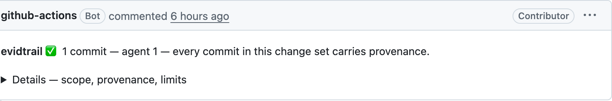

Every commit says
how it was produced
A git hook declares AI use at commit time, a CI check fails pull requests that stay silent, and an AI commit can point to the agent session that produced it.
npm install -g @evidtrail/cli
Real output from this project's own repository. A young window says "no comparison yet" instead of inventing one.
What it does
Declared at commit time
The commit hook writes AI-Mode and Assisted-by, the trailer the Linux kernel, Fedora and LLVM ask for. When evidtrail cannot know the mode, it writes nothing, and unknown stays honest.
Checked in CI
evidtrail verify fails a pull request whose commits do not state how they were produced, like a DCO check for Signed-off-by. AI-Mode: none passes; a repository-wide default does not.
Traceable to the session
Opt in, and AI commits carry AI-Session, the id of the agent session that produced them. evidtrail trail <commit> finds the transcript on your machine without opening it.
Autonomy, not the binary
Two axes: what level of AI participated (autocomplete / assisted / agent) and how we know (declared / inferred / none). The report opens with them. An assumption never becomes evidence.
PR Comments
One line on the pull request when every commit carries provenance, the gap in the open when it does not. GitHub Actions and GitLab CI are supported.
Change signals, as an appendix
How often files are touched again, reverts and hotfixes, and their trend. Churn, not a quality score: mistakes an agent fixes inside its session never reach git.
Get Started
Install globally
npm install -g @evidtrail/cli
Navigate to your Git repo
cd /path/to/your/repo
Set up and run
evidtrail init && evidtrail --since 90d
Supported AI Tools
Known tool and trailer signals can establish AI involvement. They do not, by themselves, prove an autonomy mode; absent evidence remains visible as unknown.
CI/CD Integration
One step in your workflow. The action runs evidtrail doctor first, so a shallow checkout is refused before it can produce a confidently wrong report.

What evidtrail is — and is not
evidtrail does not infer productivity, defects, deployment, causality, capitalization, or developer performance from git history. It records what git can actually establish, with the limits kept visible.
- Does evidtrail measure developer productivity or the ROI of AI coding tools?
- No. It records provenance — who or what wrote a commit, and how that is known — and, as an appendix, change signals — how often files are touched again within a fixed horizon. Nothing in git history can establish productivity or value, so evidtrail does not claim it.
- Does it tell me whether AI-written code is good?
- No. Mistakes an agent makes and fixes inside its session never reach git, so git history cannot answer that. The change signals are churn, and the report says so before showing them.
- Can a pull request be required to declare AI use?
- Yes.
evidtrail verify, or the Action inputrequire-provenance, fails a pull request whose commits do not state how they were produced, the way a DCO check requiresSigned-off-by. - How does it know a commit came from an AI agent, without anyone labelling commits?
- A
prepare-commit-msghook, installed once per clone or automatically through apackage.jsonpreparescript, detects agent sessions (Claude Code, Cursor) from their environment and stampsAI-ModeandAssisted-bytrailers.Assisted-bywritten by people and tool co-author trailers are read as well. A commit with no signal staysunknown— it is never assumed to be human. - Why doesn't it compare AI-written code with human-written code?
- It did until 1.3, and 2.0 removed the comparison. In most repositories one side is empty, and where both exist the gap reflects the work each group did more than the quality of the code. A configured
defaultModeis stamped on new commits by the hook and never applied to old ones. - Why is the most recent month left out of the trend?
- A period that ended yesterday has had one day to be reworked; one from last year has had a year. Compared raw, every report would find retouch rising. Every period is judged on the same fixed horizon, and only periods that have been over for that horizon are compared.
- Does it send code or commit data anywhere?
- Collection, analysis and reporting are local and offline. Two commands use the network, both opt-in:
fetch-prsreads pull request outcomes from the forge API,commentposts the report to a PR. Author identities can be redacted. - Wasn't this called AIDA Metrics?
- Yes, until 1.1. The name collided with the marketing funnel and an opera, and its expansion — "AI Development Accounting" — promised the cost-and-value reading the tool refuses to make. Same tool, same numbers:
@aida-dev/*,.aida.json,AIDA_MODEand theaidacommand keep working for one release and point at their new names.
Who will need to prove what AI produced?
A year from now, who will need to prove what AI produced in their repository, and to whom? If you have an answer, or think nobody will, tell us.